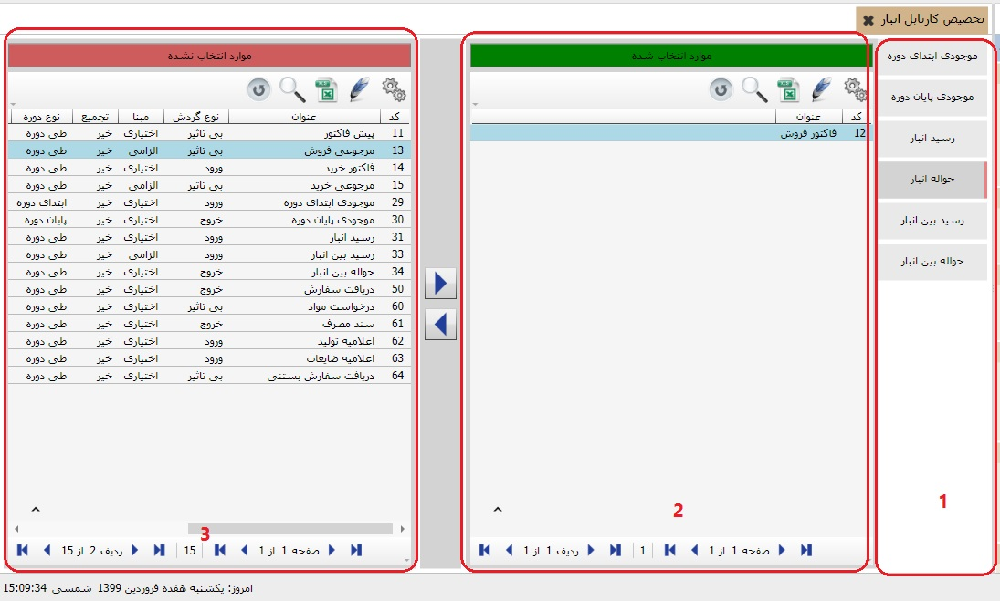
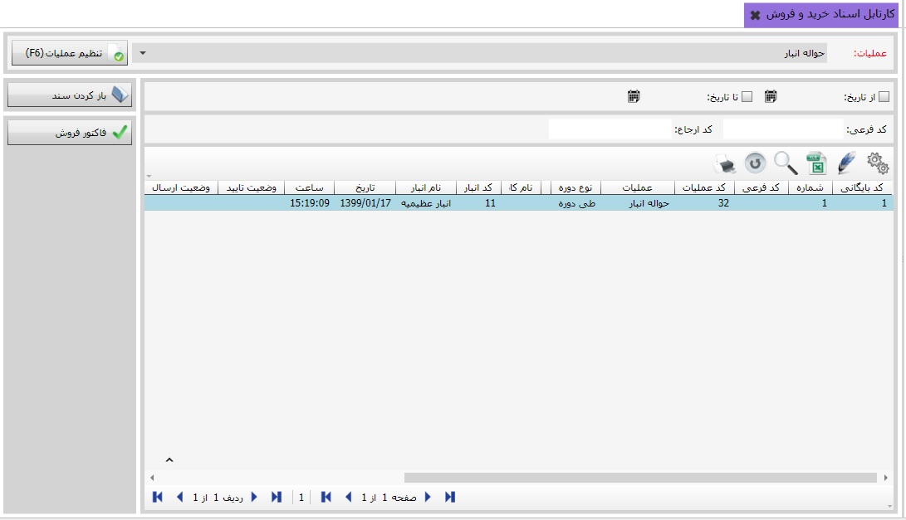

کارتابل در چهار سیستم خرید و فروش، سفارشات،انبارداری و برنامه ریزی و تولید قابل استفاده می باشد. برای استفاده از کارتابل ابتدا باید وارد یکی از چهار سیستم فوق شوید، نحوه ی استفاده از کارتابل به این ترتیب می باشد که یک سند بر اساس سندی دیگر صادر می شود، هنگامی که وارد منوی تخصیص کارتابل انبار می شوید تصویر زیر نمایان می شود:
در کادر شماره ی یک لیست عملیات های سیستم انبار را مشاهده می کنید، برای تخصیص کارتابل انبار روی عملیات مورد نظر در کادر سه کلیک کنید، و بعد از انتخاب عملیات مورد نظر از کادر شماره ی سه، با استفاده از فلش راست گرد عملیات را به کادر شماره ی دو منتقل کنید، در شکل بالا عملیات فاکتور فروش به حواله انبار تخصیص داده شده است، این به این معنی است که اگر در منوی صدور و ویرایش سند انبار عملیات حواله انبار ثبت کنید، این سند در سیستم خرید و فروش در بخش کارتابل اسناد خرید و فروش قابل مشاهده می باشد و همچنین می توانید بر اساس آن سند فاکتور فروش ثبت کنید.
حالا به صدور و ویرایش سند انبار می رویم و عملیات حواله ی انبار را یک سند می زنیم:

پس از ثبت سند فوق به کارتابل اسناد خرید و فروش میرویم:
همین طور که در تصویر بالا می بینید سند عملیات حواله ی انبار در کارتابل اسناد خرید و فروش قابل مشاهده است و می توان بر اساس آن فاکتور فروش صادر کرد، فقط کافی است که در سمت چپ تصویر بر روی کلید فاکتور فروش کلیک کنید.